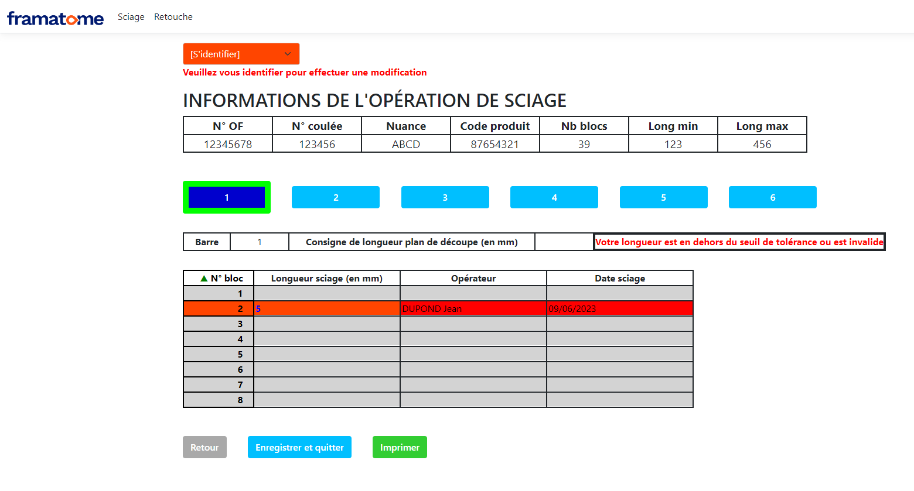
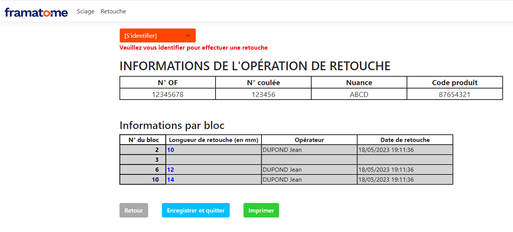

Introduction
Au cours de mon stage à Framatome, leader à l’international dans le nucléaire, j’ai évolué au sein de l’équipe MA3I et découvert les différentes étapes de traitement des produits, ainsi que l’organisation des services de l’entreprise. Mon travail était de développer, documenter et tester une application Web de gestion d’opérations effectuées sur des articles. Il sera donc question d’une interface visant à faciliter l’accès et la modification des informations stockées dans une base de données.
Interfaces graphiques
Le graphique que vous pouvez observer ci-dessous est l’interface de la saisie de valeurs pour le sciage. Vous retrouverez en haut une barre de navigation contenant le logo de l’entreprise redirigeant vers le descriptif de l’outil, ainsi que les zones de scan pour les opérations respectives.
L’interface dispose de plusieurs éléments :
• Un menu déroulant permettant de s’identifier,
• Un tableau d’informations sur l’opération en cours,
• Une liste d’onglets en bleu pour voyager à travers les différentes barres,
• Des tableaux stockant les informations de la barre sélectionnée.
• Et trois boutons accordés aux fonctions de retour-arrière, d’enregistrement des informations et de retour-arrière ou d’impression.

Puis il y a l’interface de saisie des retouches. Sur cette dernière on retrouve le menu déroulant d’identification, le tableaux des inforamtions de l’opération, ainsi que les trois boutons exécutant toujours les mêmes fonctions. Toutefois au lieu d’énumérer les barres, l’on présente l’ensemble des blocs de l’opération sous forme d’un seul et même tableau.
